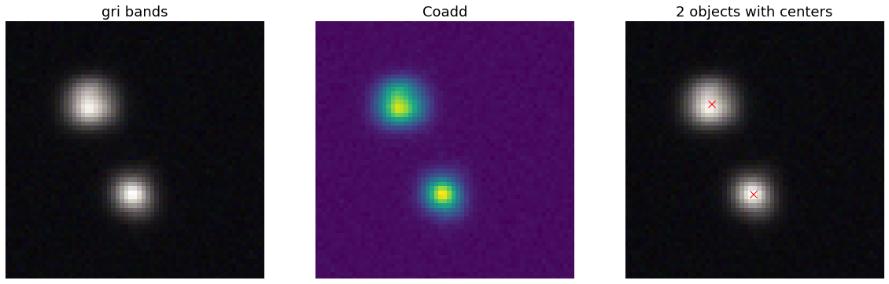
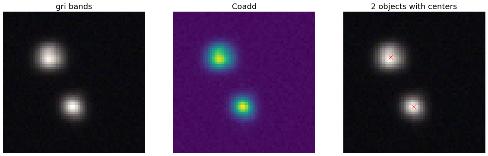
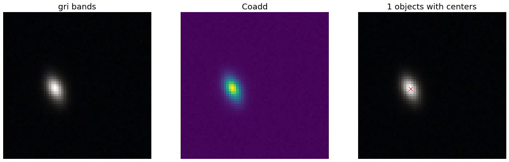
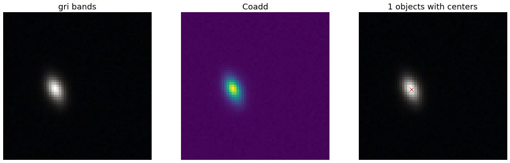
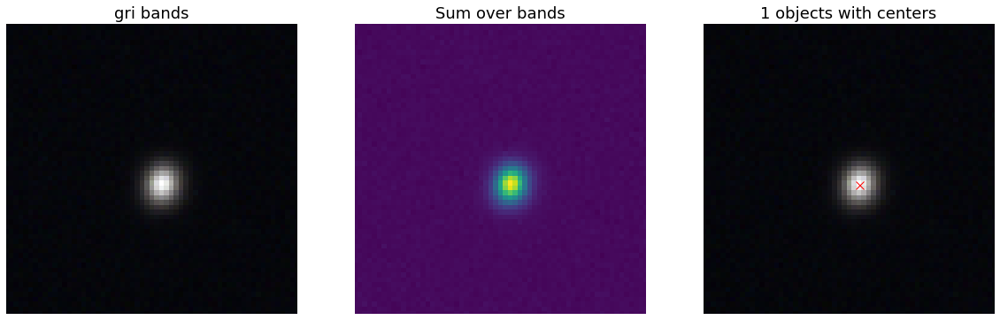
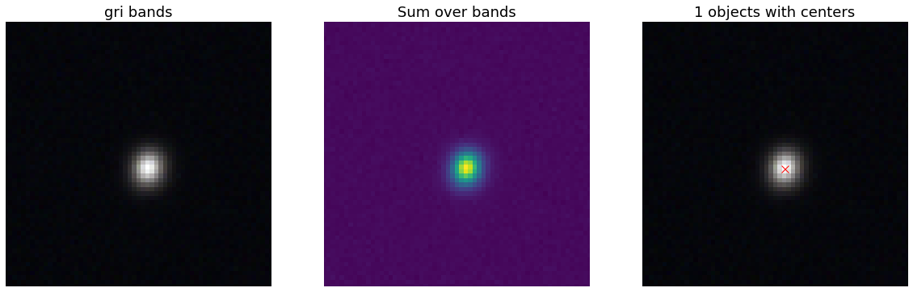

Tutorials¶
The following jupyter notebooks are included in the notebooks/ directory:
Intro notebook¶
This notebook shows how btk can be used to generate images of multi-band blend scenes, along with isolated object images – i.e., PSF-convolved object images are drawn both in isolation and in the blend scene for each band. You can find it retranscribed in the next section or access it normally via the link (necessary for interactivity).
Tutorial¶
Setup¶
Importing the relevant packages
%matplotlib inline
import matplotlib.pyplot as plt
import numpy as np
import os
import sys
import btk
import btk.plot_utils
import btk.survey
import btk.sampling_functions
import btk.catalog
import btk.draw_blends
import astropy.table
Drawing some blends¶
We will first explore the image generation part of BTK. We need to provide 3 main elements : the catalog, a sampling function and a survey.
Catalog¶
BTK uses a wrapper class for the actual catalog object, to get a standardized input for the generator. Currently BTK supports two kind of catalogs : Catsim-like catalogs and the COSMOS catalog (as provided with Galsim). Both have their own implementation of the Catalog class ; we will only use the Catsim one here. You can easily import the catalog from a FITS file using the from_file method as demonstrated here with our example catalog.
catalog_name = "../data/sample_input_catalog.fits"
catalog = btk.catalog.CatsimCatalog.from_file(catalog_name)
It is also possible to instantiate the class by giving it the catalog directly ; the from_file method is merely a shortcut.
_, ext = os.path.splitext(catalog_name)
fmt = "fits" if ext.lower() == ".fits" else "ascii.basic"
raw_catalog = astropy.table.Table.read(catalog_name, format=fmt)
catalog = btk.catalog.CatsimCatalog(raw_catalog)
When the Catalog object is created, it creates internally a table attribute containing a modified table from the input, which will be used in the rest of the code.
Sampling Function¶
The sampling function is an object which is used to determine the informations about the blends, eg which galaxies are drawn, with what shifts, … This is achieved using the SamplingFunction class, which is callable like a function, taking as argument the Catalog.table and returning modified selected entries corresponding to the galaxies being drawn. For this tutorial, we will use the default sampling function, which can be instantiated like this :
stamp_size = 24.0 # Size of the stamp, in arcseconds
max_number = 3 # Maximum number of galaxies in a blend
max_shift = 3.0 # Maximum shift of the galaxies, in arcseconds
sampling_function = btk.sampling_functions.DefaultSampling(max_number=max_number, stamp_size=stamp_size, maxshift=max_shift)
As a reference, here is the code for this sampling function.:
class DefaultSampling(btk.sampling_functions.SamplingFunction):
"""Default sampling function used for producing blend tables."""
def __init__(self, max_number=2, stamp_size=24.0, maxshift=None):
"""
Args:
max_number (int): Defined in parent class
stamp_size (float): Size of the desired stamp.
maxshift (float): Magnitude of maximum value of shift. If None then it
is set as one-tenth the stamp size. (in arcseconds)
"""
super().__init__(max_number)
self.stamp_size = stamp_size
self.maxshift = maxshift if maxshift else self.stamp_size / 10.0
@property
def compatible_catalogs(self):
return "CatsimCatalog", "CosmosCatalog"
def __call__(self, table, shifts=None, indexes=None):
"""Applies default sampling to the input CatSim-like catalog and returns an
astropy table with entries corresponding to a blend centered close to postage
stamp center.
Function selects entries from input table that are brighter than 25.3 mag
in the i band. Number of objects per blend is set at a random integer
between 1 and Args.max_number. The blend table is then randomly sampled
entries from the table after selection cuts. The centers are randomly
distributed within 1/10th of the stamp size. Here even though the galaxies
are sampled from a CatSim catalog, their spatial location are not
representative of real blends.
Args:
table (astropy.table): Table containing entries corresponding to galaxies
from which to sample.
shifts (list): Contains arbitrary shifts to be applied instead of random ones.
Should of the form [x_peak,y_peak] where x_peak and y_peak are the lists
containing the x and y shifts.
indexes (list): Contains the indexes of the galaxies to use.
Returns:
Astropy.table with entries corresponding to one blend.
"""
number_of_objects = np.random.randint(1, self.max_number + 1)
(q,) = np.where(table["ref_mag"] <= 25.3)
if indexes is None:
blend_table = table[np.random.choice(q, size=number_of_objects)]
else:
blend_table = table[indexes]
blend_table["ra"] = 0.0
blend_table["dec"] = 0.0
if shifts is None:
x_peak, y_peak = _get_random_center_shift(number_of_objects, self.maxshift)
else:
x_peak, y_peak = shifts
blend_table["ra"] += x_peak
blend_table["dec"] += y_peak
if np.any(blend_table["ra"] > self.stamp_size / 2.0) or np.any(
blend_table["dec"] > self.stamp_size / 2.0
):
warnings.warn("Object center lies outside the stamp")
return blend_table
You can see that this function chooses random galaxies (after applying a magnitude cut), computes random shifts for the galaxies and returns the entries from the table, adding two columns corresponding to the shifts. You may write more complex sampling functions if you wish to have more control over how the galaxies are drawn ; there are some other examples in the btk.sampling_functions file.
Survey¶
The BTK Survey object defines the observing conditions relative to a survey. It is based on the named tuple class, and contains various parameters (eg pixel scale), including a list of Filter objects. The Filter class is also based on a named tuple, and contains information concerning a specific filter in the survey (eg exposition time). Numerous surveys are already implemented in BTK ; we will import the Rubin one for this tutorial.
from btk.survey import Rubin
You may want to define your own survey if you wish to modify some parameters or use a survey which is not implemented in BTK. We advise you to take the code of an existing survey and modify it to your convenience. Here is the one for Rubin
from btk.survey import get_psf
_central_wavelength = {
"u": 3592.13,
"g": 4789.98,
"r": 6199.52,
"i": 7528.51,
"z": 8689.83,
"y": 9674.05,
}
Rubin = btk.survey.Survey(
"LSST",
pixel_scale=0.2,
effective_area=32.4,
mirror_diameter=8.36,
airmass=1.2,
zeropoint_airmass=1.2,
filters=[
btk.survey.Filter(
name="y",
psf=get_psf(
mirror_diameter=8.36,
effective_area=32.4,
filt_wavelength=_central_wavelength["y"],
fwhm=0.703,
),
sky_brightness=18.6,
exp_time=4800,
zeropoint=10.58,
extinction=0.138,
),
btk.survey.Filter(
name="z",
psf=get_psf(
mirror_diameter=8.36,
effective_area=32.4,
filt_wavelength=_central_wavelength["z"],
fwhm=0.725,
),
sky_brightness=19.6,
exp_time=4800,
zeropoint=22.68,
extinction=0.043,
),
btk.survey.Filter(
name="i",
psf=get_psf(
mirror_diameter=8.36,
effective_area=32.4,
filt_wavelength=_central_wavelength["i"],
fwhm=0.748,
),
sky_brightness=20.5,
exp_time=5520,
zeropoint=32.36,
extinction=0.07,
),
btk.survey.Filter(
name="r",
psf=get_psf(
mirror_diameter=8.36,
effective_area=32.4,
filt_wavelength=_central_wavelength["r"],
fwhm=0.781,
),
sky_brightness=21.2,
exp_time=5520,
zeropoint=43.70,
extinction=0.10,
),
btk.survey.Filter(
name="g",
psf=get_psf(
mirror_diameter=8.36,
effective_area=32.4,
filt_wavelength=_central_wavelength["g"],
fwhm=0.814,
),
sky_brightness=22.3,
exp_time=2400,
zeropoint=50.70,
extinction=0.163,
),
btk.survey.Filter(
name="u",
psf=get_psf(
mirror_diameter=8.36,
effective_area=32.4,
filt_wavelength=_central_wavelength["u"],
fwhm=0.859,
),
sky_brightness=22.9,
exp_time=1680,
zeropoint=9.16,
extinction=0.451,
),
],
)
Most attributes should be pretty straightforward to modify ; please take a look at the documentation for a more substantial description of the attributes. The psf attribute deserves an additionnal explanation : it corresponds to the PSF for each filter. It can be provided either directly as a Galsim model (eg galsim.Kolmogorov(fwhm=1.5)) or as a function returning a Galsim model, for randomization purposes. Example :
def random_psf():
fwhm = np.random.uniform(1.5,1.7)
return galsim.Kolmogorov(fwhm)
You may want to use a function taking an argument to avoid rewriting the function for each filter ; we advise using lambda functions to achieve this, eg get_u_psf = lambda : get_custom_psf(u_band_argument). Finally, you can use the default function get_psf as demonstrated in the Rubin Survey, to get a complex (not random) PSF, or use the function get_psf_from_file(psf_dir, pixel_scale) to import a PSF from a FITS file (randomly if there are more than one file in the directory provided).
Drawing the blends¶
Now that we have all the objects at our disposal, we can create the DrawBlendsGenerator. This object is a python generator, meaning it can be called with next(generator) to generate a new batch. It is again declined for Catsim and COSMOS, and we will use the Catsim one here. We suggest you refer to the documentation for information on the additionnal parameters here.
draw_generator = btk.draw_blends.CatsimGenerator(
catalog,
sampling_function,
[Rubin],
batch_size=8,
stamp_size=stamp_size,
shifts=None,
indexes=None,
cpus=1,
add_noise=True,
)
- The results from the next call are stored in the dictionnary ; the keys are :
blend_images for the actual images (as a (batch_size,stamp_size,stamp_size,len(survey.filters))-sized numpy array )
isolated_images for the isolated images (as a (batch_size,sampling_function.max_number,stamp_size,stamp_size,len(survey.filters))-sized numpy array )
blend_list for the blend information (as a list of astropy tables corresponding to the output of the sampling function for each blend)
psf for the PSF (as a list of Galsim object)
wcs for the World Coordinate System corresponding to the images (as a list of astropy.wcs.WCS objects)
Please note that several surveys can be provided as a list to the generator. In that case, each of the entry will contain a dictionnary indexed by the surveys, which in turn contains the results described as above (you would access it with batch[‘blend_images’][‘LSST’] for instance.
batch = next(draw_generator)
blend_images = batch['blend_images']
blend_list = batch['blend_list']
btk.plot_utils.plot_blends(blend_images, blend_list, limits=(30,90))
Measurement¶
Now that we have some images, we can carry on with the measurements. What we call measurements in BTK is one of the three main targets of deblending : detections, segmentations and deblended images. You can use BTK to directly carry out the measurements on the generated data. To do this, you need to define a measure function. The measure function is a regular function with two positional arguments : batch and idx. Batch is the direct output of a DrawBlendsGenerator, and idx is the index of the blend on which the measurements should be done. It also takes an arbitrary number of keyword arguments via **kwargs. Here is an example of what the function looks like for SEP (python implementation of Source Extractor).
def sep_measure(batch, idx, channels_last=False, **kwargs):
"""Return detection, segmentation and deblending information with SEP.
NOTE: This function does not support the multi-resolution feature.
Args:
batch (dict): Output of DrawBlendsGenerator object's `__next__` method.
idx (int): Index number of blend scene in the batch to preform
measurement on.
Returns:
dict with the centers of sources detected by SEP detection algorithm.
"""
if isinstance(batch["blend_images"], dict):
raise NotImplementedError("This function does not support the multi-resolution feature.")
image = batch["blend_images"][idx]
stamp_size = image.shape[-2] # true for both 'NCHW' or 'NHWC' formats.
channel_indx = 0 if not channels_last else -1
coadd = np.mean(image, axis=channel_indx) # Smallest dimension is the channels
bkg = sep.Background(coadd)
# Here the 1.5 value corresponds to a 1.5 sigma threshold for detection against noise.
catalog, segmentation = sep.extract(coadd, 1.5, err=bkg.globalrms, segmentation_map=True)
n_objects = len(catalog)
segmentation_exp = np.zeros((n_objects, stamp_size, stamp_size), dtype=bool)
deblended_images = np.zeros((n_objects, *image.shape), dtype=image.dtype)
for i in range(n_objects):
seg_i = segmentation == i + 1
segmentation_exp[i] = seg_i
seg_i_reshaped = np.zeros((np.min(image.shape), stamp_size, stamp_size))
for j in range(np.min(image.shape)):
seg_i_reshaped[j] = seg_i
seg_i_reshaped = np.moveaxis(seg_i_reshaped, 0, np.argmin(image.shape))
deblended_images[i] = image * seg_i_reshaped
t = astropy.table.Table()
t["x_peak"] = catalog["x"]
t["y_peak"] = catalog["y"]
return {
"catalog": t,
"segmentation": segmentation_exp,
"deblended_images": deblended_images,
}
The function is not required to output all three measurements, only the catalog containing the detections is mandatory. Once the measure function is defined, it can be given to a MeasureGenerator together with the DrawBlendsGenerator from the previous step.
meas_generator = btk.measure.MeasureGenerator(btk.measure.sep_measure,draw_generator)
The results returned by the MeasureGenerator`are both the results from the `DrawBlendsGenerator and the measures, as a dictionnary with the same keys as the measure function output but containing a list with the results from all the blends.
blend_results,meas_results = next(meas_generator)
Metrics¶
Finally, now that we have the measurements, we can compute metrics to evaluate the performance of those measurements. This is done using a MetricsGenerator, which takes a MeasureGenerator as an input, as well as a handful of parameters. It will match the true galaxies with the detected galaxies and compute metrics evaluating the quality of the detection (precision, recall, F1 score), the segmentation (Intersection over Union) and the reconstruction of the galaxy images (Mean Square Residual, Peak Signal to Noise Ratio, Structure Similarity Index, error on the target measures). You can find more details on those metrics on the page of the metrics module in the documentation.
import btk.metrics
import btk.plot_utils
metrics_generator = btk.metrics.MetricsGenerator(meas_generator,use_metrics=("detection","segmentation","reconstruction"),
target_meas={"ellipticity":btk.metrics.meas_ksb_ellipticity})
blend_results,meas_results,results = next(metrics_generator)
Unphysical situation: galaxy convolved with PSF is smaller than PSF!
Error: NaN in calculation of adaptive moments
Error: adaptive moment failed
Once we got the results, we can plot them using functions found in the plot_utils module. While you can access all the raw data with the keys “detection”, “segmentation” and “reconstruction”, you can directly access all the segmentation and reconstruction metrics with the “galaxy_summary” key, which contains an astropy Table with all galaxies from all blends and the associated parameters and metrics.
results = list(results.values())[0]
gal_summary = results["galaxy_summary"][results["galaxy_summary"]["detected"]==True]
msr = gal_summary["msr"]
dist = gal_summary["distance_closest_galaxy"]
dist_detect = gal_summary["distance_detection"]
fig, ((ax1,ax2),(ax3,ax4)) = plt.subplots(2,2)
btk.plot_utils.plot_metrics_distribution(msr,"msr",ax1,upper_quantile=0.9)
btk.plot_utils.plot_metrics_distribution(dist,"Distance to the closest galaxy",ax2)
btk.plot_utils.plot_metrics_correlation(dist,msr,"Distance to the closest galaxy","msr",ax3,upper_quantile=0.9,style='heatmap')
btk.plot_utils.plot_metrics_correlation(dist,dist_detect,"Distance to the closest galaxy","Distance detection",ax4,upper_quantile=0.9,style='scatter')
plt.show()
btk.plot_utils.plot_efficiency_matrix(results["detection"]["eff_matrix"])
gal_summary_filtered = gal_summary[gal_summary["ellipticity0_true"]<1.0]
gal_summary_filtered = gal_summary_filtered[gal_summary_filtered["ellipticity0_true"]>-1.0]
gal_summary_filtered = gal_summary_filtered[gal_summary_filtered["ellipticity0"]<1.0]
gal_summary_filtered = gal_summary_filtered[gal_summary_filtered["ellipticity0"]>-1.0]
e1 = gal_summary_filtered["ellipticity0"]
e1_true = gal_summary_filtered["ellipticity0_true"]
btk.plot_utils.plot_metrics_correlation(e1,e1_true,"e1","e1_true",upper_quantile=0.9,style='truth')
Using COSMOS galaxies¶
We will now focus on generating image using galaxies from the COSMOS catalog. You will find that generating images with COSMOS is very similar to generating images with Catsim. Let’s start with the catalog and sampling function. Here we use a small sample of the real COSMOS catalog ; feel free to fill in the correct path if you have the complete catalog on your computer.
COSMOS_CATALOG_PATHS = [
"../data/cosmos/real_galaxy_catalog_23.5_example.fits",
"../data/cosmos/real_galaxy_catalog_23.5_example_fits.fits",
]
stamp_size = 24.0
batch_size = 8
catalog = btk.catalog.CosmosCatalog.from_file(COSMOS_CATALOG_PATHS)
sampling_function = btk.sampling_functions.DefaultSampling(stamp_size=stamp_size)
We can now create the corresponding instance of DrawBlendsGenerator. There is an important caveat here : as in the other tutorial, we use the Rubin survey. However, the COSMOS catalog only contains images from the f814w band ; when using other bands, the image is only rescaled to get the right flux. Moreover, at the time the flux will not be accurate as we do not have the SED for COSMOS galaxies, meaning that we cannot recover the correct magnitude in other bands than f814w ; the flux is thus computed using the magnitude in that band and the survey parameters provided. We are currently working on getting a more realistic flux.
draw_generator = btk.draw_blends.CosmosGenerator(
catalog,
sampling_function,
[btk.survey.Rubin],
batch_size=batch_size,
stamp_size=stamp_size,
cpus=1,
add_noise=True,
verbose=False,
meas_bands=["i"],
)
batch = next(draw_generator)
blend_images = batch['blend_images']
blend_list = batch['blend_list']
btk.plot_utils.plot_blends(blend_images, blend_list, limits=(30,90))

 

 

Galsim_Hub tutorial¶
BTK supports galaxy image generation with galsim_hub ; please refer to this page for more details on galsim_hub. The steps for using the galsim_hub generation are very similar to those from the previous section. Before starting this tutorial, you must install galsim_hub, which can be done using pip. You can find a notebook version of this tutorial in the notebooks folder.
First, you should use the CosmosCatalog catalog instead of the Catsim one. While galsim_hub only require parameters for the image generation, we have chosen to use COSMOS as the source of those parameters so as to get a realistic distribution of those parameters. We have included a small sample of the catalog in BTK, and advise you to download the full catalog (see:ref:COSMOS) for better results.
COSMOS_CATALOG_PATHS = [
"../data/cosmos/real_galaxy_catalog_23.5_example.fits",
"../data/cosmos/real_galaxy_catalog_23.5_example_fits.fits",
]
catalog = btk.catalog.CosmosCatalog.from_file(COSMOS_CATALOG_PATHS)
We then instantiate the sampling function ; you should use the one specific for galsim_hub, which includes a cut on the size of the galaxies, as artifacts tend to appear when trying to generate galaxies which are too big.
stamp_size = 24.0
sampling_function = btk.sampling_functions.DefaultSamplingGalsimHub(stamp_size=stamp_size)
Then we can instantiate the DrawBlendsGenerator with the survey of your choice. Please bear in mind that while BTK will draw the images in any band you desire, galsim_hub does not generate a SED for the galaxy ; this means that the magnitude will be inacurrate in any other band than the one generated by the galsim_hub model you use (by default “hub:Lanusse2020”).
batch = next(draw_generator)
blend_images = batch['blend_images']
blend_list = batch['blend_list']
btk.plot_utils.plot_blends(blend_images, blend_list, limits=(30,90))


 
